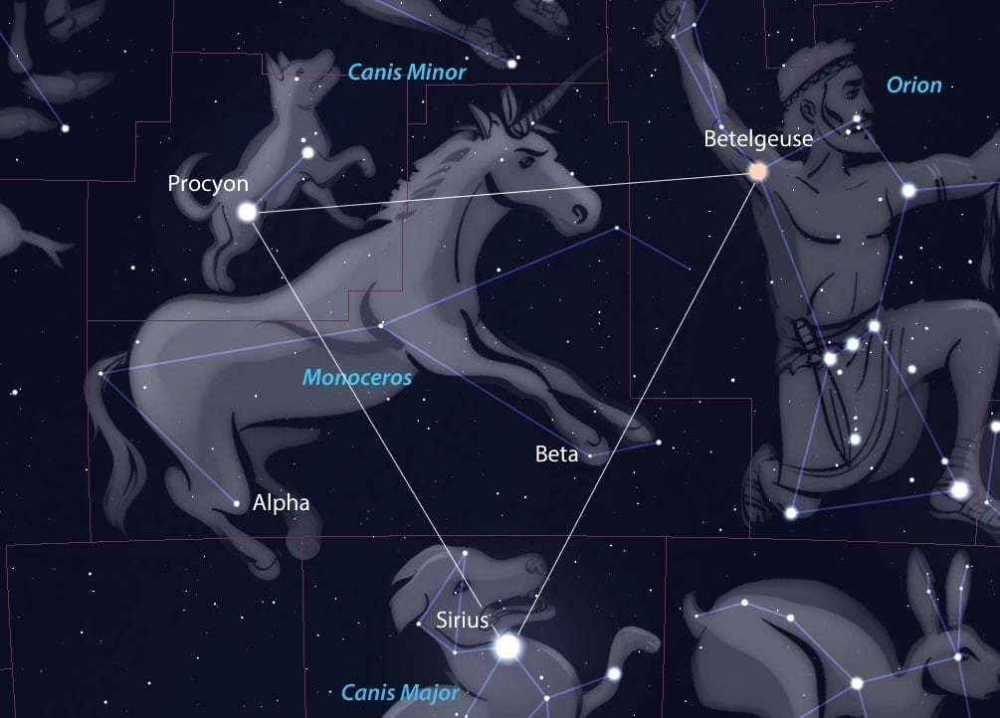
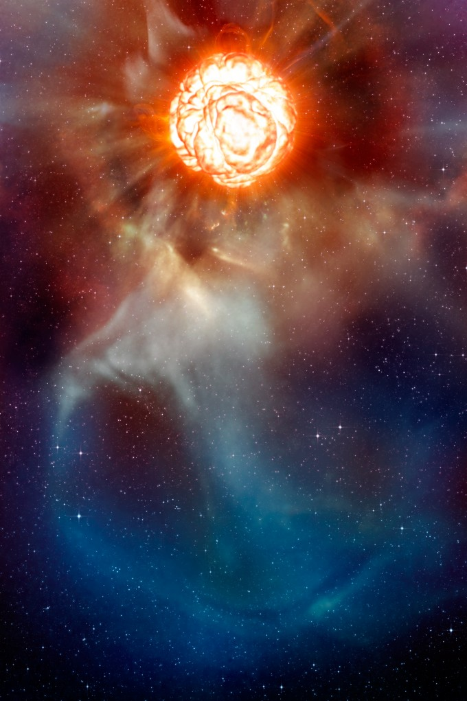

베텔게우스(Betelgeuse)는 오리온자리의 좌상 꼭짓점에 위치해 있으며, 지름이 9억 6500만㎞로, 태양보다 800배 이상크다. 베텔게우스를 태양계에 두면 목성의 궤도까지 잡아먹을 정도이다.

지구에서 650광년 떨어진 비교적 가까운 거리에 있으며, 망원경으로 표면 특징을 포착할 수 있는 몇 안 되는 별 중 하나이다. 별의 회전 속도가 시속 1만7700~5만3000㎞(미국천문학회 235차 회의에서 발표됨)라고 한다. 별의 밝기가 어두워져서 곧 초신성으로 폭발하게 될 것이 아닌지 하는 소식이 있다. 초신성이 폭발 했다면 650년 후에나 우주의 불꽃 놀이를 볼 수 있다.

- 신성 : 신성은 별의 껍질만 폭발한다. 따라서 한 별에서 신성 현상은 여러 차례 일어날 수 있다.
- 초신성 : 보통 신성보다 1만 배 이상 밝으며, 별의 마지막 진화 단계이다. 초신성은 별 자체가 폭발해 사라지기 때문에 별의 장엄한 최후다. 급격한 폭발이 일어나 별이 밝다.